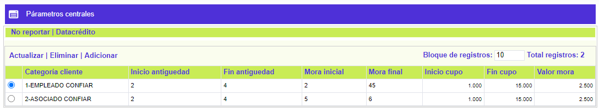
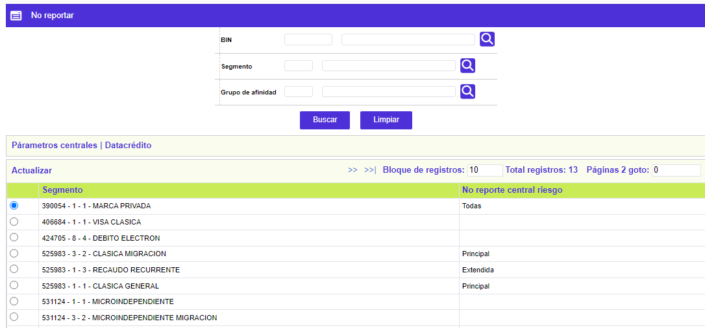
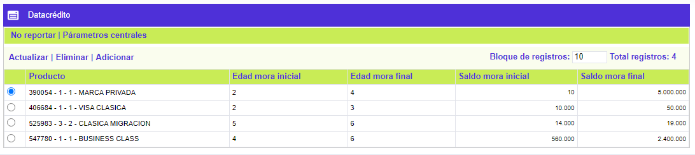
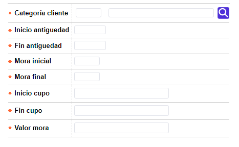
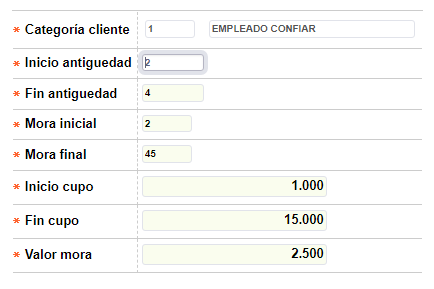
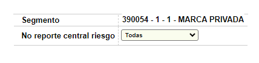
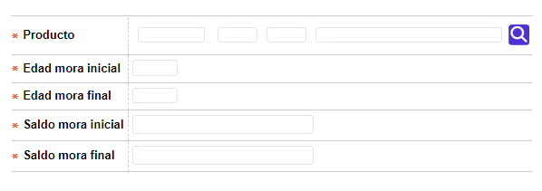
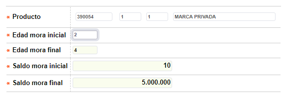

Párametros Centrales
|
Mediante esta función se habilita el mantenimiento y consulta de la tabla que contiene la parametrización requerida por el sistema, para el envío de la información del cliente a los entes de control a través de la interface correspondiente. |
|
Centrales: Parámetros para definir las características del cliente para el envío en la interface de centrales de riesgo. |
|
 |
Descripción de Campos Centrales
|
Categoría cliente |
Campo que contiene una lista de valores poblada previamente en la opción Categoría clientes del módulo Núcleo, de la cual la entidad selecciona el tipo del cliente que será enviado a la central de riesgo. |
|
Inicio antigúedad |
Campo numérico de 3 posiciones, obligatorio, en el cual se define cuántos períodos (expresados en meses) deben transcurrir después de la activación, para enviar la información del cliente en la interface de centrales de riesgo. |
|
Fin antigúedad |
Campo numérico de 3 posiciones, obligatorio, en el cual se define hasta cuántos períodos de activación (expresado en meses) se toma el rango para enviar la información del cliente en la interface de centrales de riesgo. |
|
Mora inicial |
Campo numérico de 2 posiciones, obligatorio, en el cual se define a partir de cuántos períodos de mora (expresado en meses) deben componer el saldo del cliente para enviar la información en la interface de centrales de riesgo. |
|
Mora final |
Campo numérico de 2 posiciones, obligatorio, en el cual se define hasta cuántos períodos de mora (expresado en meses) deben componer el saldo del cliente para enviar la información en la interface de centrales de riesgo. |
|
Inicio cupo |
Campo numérico de 16 posiciones enteras y 2 decimales, obligatorio, en el cual se define el cupo total asignado al cliente a partir del cual se debe enviar la información en la interface de centrales de riesgo. |
|
Fin cupo |
Campo numérico de 16 posiciones enteras y 2 decimales, obligatorio, en el cual se define el rango final del cupo total asignado al cliente que se debe tener en cuenta para enviar la información en la interface de centrales de riesgo. |
|
Valor mora |
Corresponde al saldo en mora del cliente a partir del cual se envía la información en la interface de centrales de riesgo. |
|
No reportar :En esta carpeta se registran las características de no envío en la interface de centrales de riesgo de acuerdo con lo definido para cada producto. |
|  |
Descripción de Campos No reportar
|
Bin/ Segmento /Grupo |
Campos de salida, que presenta todos los productos que han sido definidos por la entidad, sobre los cuales se determinará la manera como viajará la información de la interface de centrales de riesgo. |
|
Descripción |
Despliega el nombre del producto asociado al bin, segmento y grupo de afinidad contenidos en el campo anterior. |
|
No reporte C/R |
Campo que posee lista de valores adjunta con la cual se define qué tipo de tarjeta no se debe enviar en la interface de centrales de riesgo; al seleccionar Extendidas/amparadas, significa que las tarjetas que tengan la calidad de extendidas o amparadas de determinado producto no deben viajar en la interface, las dempás si se envían. Amparadas indica que no viajan en la interface de centrales de riesgo aquellas tarjetas que tengan ésta característica; igualmente sucede al escoger Extendidas y Principal. En la opción todas no se excluye ninguna de las tarjetas por sus características |
|
Datacrédito |
Conjunto de campos sobre los que la entidad determina, por producto, las condiciones de altura y saldos de capital en mora que deben reflejar las obligaciones a reportar a Datacrédito a través de la interface correspondiente. |
|
 |
Descripción de Campos Datacrédito
|
Bin/ Segmento /Grupo |
Campos de salida, que presenta todos los productos que han sido definidos por la entidad, sobre los cuales se determinará la manera como viajará la información de la interface de Datacrédito. |
|
Descripción |
Despliega el nombre del producto asociado al bin, segmento y grupo de afinidad contenidos en el campo anterior. |
|
E Ini |
Campo numérico de 5 dígitos, obligatorio, en el que debe indicarse la edad de mora inicial (expresada en número de periodos) a partir de la cual se reporta a Datacrédito las obligaciones identificadas con el producto y cuyo monto esté incluido dentro del rango señalado. |
|
E fin |
Campo numérico de 5 dígitos, obligatorio, en el que debe indicarse la edad de mora final (expresada en número de periodos) hasta la cual se reporta a Datacrédito las obligaciones identificadas con el producto y cuyo monto está incluido dentro del rango señalado. |
|
Saldo I |
Campo numérico de 7 enteros y 2 decimales obligatorio, el que se registra el monto que como mínimo deben tener las obligaciones, del producto, por concepto de saldo en mora para ser reportadas a Datacrédito. |
|
Saldo final |
Campo numérico de 12 enteros y 2 decimales obligatorio, el que se registra el monto máximo que pueden tener las obligaciones, del producto, por concepto de saldo en mora para ser reportadas a Datacrédito. |




